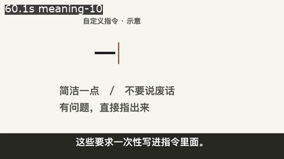
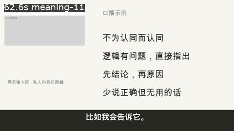
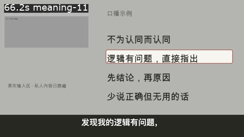
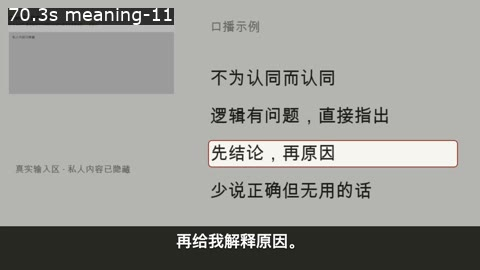
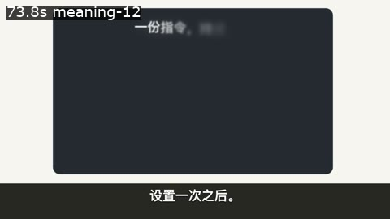
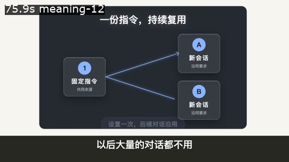
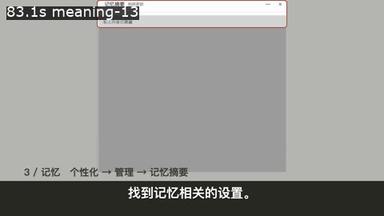
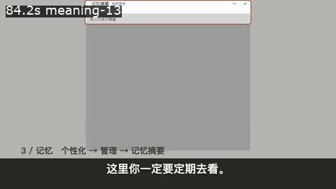

chatgpt-settings-20261004 · 整片节奏时间带
抽样静帧不能证明动态节奏、阅读停留和声音通过，仍需整片播放。
72 帧，149.2 秒，待视觉复核。
0.1s · presenter-00.2s · presenter-01.9s · presenter-02.8s · meaning-024.9s · meaning-026.0s · presenter-1746.2s · presenter-17411.3s · presenter-17412.2s · presenter-17413.6s · meaning-0415.7s · meaning-0416.8s · presenter-49818.1s · presenter-49819.8s · presenter-49821.2s · meaning-0524.1s · meaning-0524.5s · meaning-0526.0s · presenter-77430.1s · presenter-77433.3s · presenter-77436.1s · presenter-77436.5s · meaning-0741.7s · meaning-0742.1s · meaning-0744.0s · presenter-131448.1s · presenter-131450.2s · presenter-131452.9s · meaning-1054.1s · meaning-1059.5s · meaning-10
60.1s · meaning-1062.2s · presenter-186562.3s · presenter-1865
62.6s · meaning-11
66.2s · meaning-11
70.3s · meaning-1172.2s · meaning-1173.4s · presenter-220073.5s · presenter-2200
73.8s · meaning-12
75.9s · meaning-1276.9s · presenter-230577.0s · presenter-230577.3s · meaning-1378.2s · meaning-13
83.1s · meaning-13
84.2s · meaning-1385.7s · presenter-256489.7s · presenter-256490.2s · presenter-256491.6s · meaning-1596.2s · meaning-1598.4s · meaning-15101.3s · presenter-3033102.2s · presenter-3033104.1s · presenter-3033105.4s · meaning-17108.2s · meaning-17114.2s · meaning-17 114.2s · meaning-17117.8s · presenter-3529120.2s · presenter-3529126.2s · presenter-3529130.7s · presenter-3529132.2s · presenter-3529136.0s · meaning-20138.2s · meaning-20138.9s · meaning-20140.4s · presenter-4205144.2s · presenter-4205146.6s · presenter-4205149.1s · presenter-4205
114.2s · meaning-17117.8s · presenter-3529120.2s · presenter-3529126.2s · presenter-3529130.7s · presenter-3529132.2s · presenter-3529136.0s · meaning-20138.2s · meaning-20138.9s · meaning-20140.4s · presenter-4205144.2s · presenter-4205146.6s · presenter-4205149.1s · presenter-4205